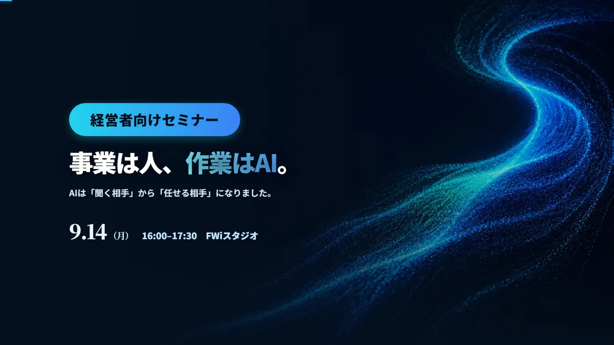
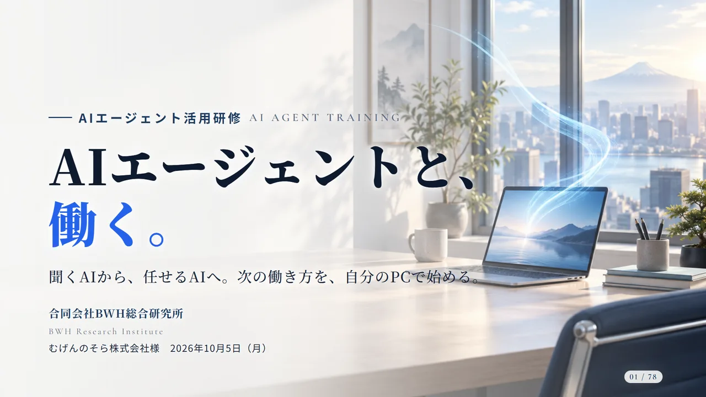
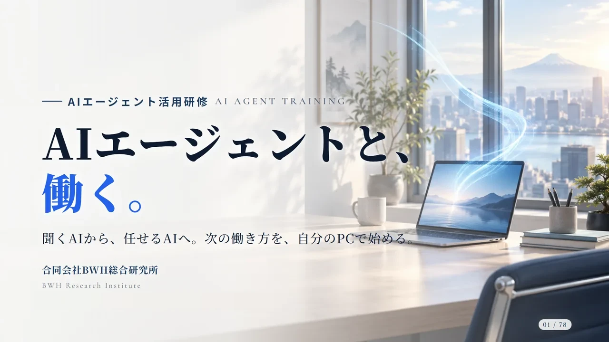

01 ／ TRAINING
現場AI研修
明日から、自分の仕事でAIが動く。
AIエージェントを、自社の業務に合わせて使いこなす実務研修です。3日間・15時間で、社内のAI推進担当と、各職務の実務者を育てます。
助成金提携の社会保険労務士と連携。助成金を使った受講もご相談いただけます
研修を相談する題材は、御社の実際の仕事です。
誰にでも同じ内容を話す汎用のAI講座ではなく、職務に直結する実務研修として組んでいます。研修を終えた日から、受講者が自分の業務でAIエージェントを動かせるようにします。会社全体の仕組みに組み込む段階は、研修のあとに一緒に進めます。
こんな会社に
- CASE 01AIのアカウントは作ったが、ほとんど使われていない
- CASE 02社内でAIを進める担当を決めたが、何から始めればいいか分からない
- CASE 03使っているのは一部の社員だけで、仕事のやり方は変わっていない
3日間で、任せられる人を育てる
DAY 1 5時間
任せられる形にするSetup & design
AIエージェントを全員のパソコンで動かし、自社の前提を覚えさせます。そのうえで、パソコンの書類やメール・カレンダーとつなぎ、仕事を任せられる状態をつくります。
- AIエージェントの準備と、入れてよい情報の扱い
- 会社のこと・言い回し・やってはいけないことをAIに覚えさせる
- 書類やメール・カレンダーとつなぎ、小さな道具も作る
DAY 2 5時間
職務ごとに動かすHands-on by role
経理・受発注・営業・総務など、職務ごとの演習です。自分の仕事に近い題材で、AIエージェントに実際の作業をさせ、結果を確かめる方法まで身につけます。
- 請求書や注文書を読み取り、表に転記して検算する
- メールやカレンダーとつないで、下書きや日程調整を任せる
- 社内の資料を読ませて、問い合わせに答えさせる
DAY 3 5時間
自分の業務に組み込むInto your own work
業務を工程に分け、AIに任せる部分と人が確かめる部分を決める手法を学びます。受講者それぞれが自分の業務を1つ題材にして、任せる手順を組み、動かしてみます。
- 業務を工程に分け、AIに渡す単位を決める
- 間違いに気づける確認の置き方を身につける
- 入れてよい情報・入れない情報を決めるときの考え方を学ぶ
研修のかたち
- 時間
- 3日間・15時間（1日5時間）。1か月以内に終えます
- 対象
- 社内のAI推進担当（予定の方を含む）と、各職務の実務者
- 会場
- 貸会議室など、御社の職場の外で行います。オンライン（同時双方向）での受講もできます
- 教材
- 受講者用のテキストをお渡しします
- 修了
- 研修時間の8割以上に出席した方が修了です
- 助成金
- 活用できるかどうかは、提携の社会保険労務士と一緒に確認します
研修までの流れ
1.体感セミナー
2〜3時間のセミナーで、AIエージェントが仕事を回す様子を実演で見ていただきます。
2.ご相談
受講する方の職務と人数、題材にする業務を伺います。
3.研修（3日間）
全員が自分のパソコンで手を動かし、任せる手法を身につけます。
4.研修のあと
実際の業務への組み込みや社内ルールづくりは、研修とは別に、みぎ腕や制作で引き受けます。
自社の業務に実際に組み込む段階は、「AXのみぎ腕」や「AIおまかせ制作」で一緒に進めます。
事例・活用例

福井の経営者向けAIエージェント実演セミナー（2026年9月）
- 課題
- 生成AIを試した会社は増えたものの、日々の業務で使い続けている会社はまだ多くない。
- 使ったもの
- Claude Code（AIエージェント）、請求書PDFの読み取りと管理表への転記、メール・カレンダーとの連携、複数のAIで分担するエージェントチーム
- できたこと
- 経営者と社内のAI担当者に、AIエージェントが実務を進める様子を4本の実演で見ていただきました。多くの参加者が「まず話を聞いてみたい」と答え、複数の会社と個別の面談に進んでいます。

むげんのそら｜AIエージェント集中研修（2026年10月）
- 課題
- 新しい事業を進めるなかで、社内でAIを使いこなせる人を増やし、既存の業務にも広げていきたい。
- 使ったもの
- Claude（チーム向けプラン）、Claude Code、Gmail・カレンダーとの連携、セットアップ手順書
- できたこと
- AI導入を担うメンバーが、3時間の実習で、自分のPCからAIエージェントを動かしました。受講者からは、できることがもっと広がりそうだという声が多く上がりました。研修のあと社内にタスクフォースができ、既存業務のAI化が動き出しています。

福井鐵工｜経営者も一緒に受けたAIエージェント研修（2026年春）
- 課題
- AIに関心はあるが、自社の仕事のどこで、どう使えばよいかが見えていない。
- 使ったもの
- Claude（AIエージェント）、各自のPCでの実習
- できたこと
- 経営者を含む約10名が、自分のPCでAIエージェントを動かす研修を受けました。研修のあと、人事の運用にもAIを活かしたいという話になり、組織・人事の月次の伴走へ進んでいます。
Price
費用は、都度お見積もり
人数と、題材にする業務を伺ってから、金額をお出しします。補助金・助成金の活用は、提携の社会保険労務士にご相談いただけます。対象になるかどうかは研修の中身や会社の条件で変わるため、社労士と一緒に確認します。
ご相談から開始まで
STEP 1
フォームから相談
やりたいことや困っている作業を、そのまま書いてください。
STEP 2
お話を伺い、お見積もり
内容と期限を伺い、進め方と金額をご提案します。
STEP 3
開始
ご納得いただけたら始めます。途中で内容を変えたいときも、ご相談ください。
ほかのサービス


Contact
何人で、どんな仕事に
使いたいかを教えてください。
相談はフォームから受け付けています。内容を読んで、こちらからご連絡します。